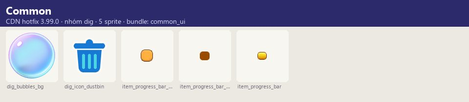
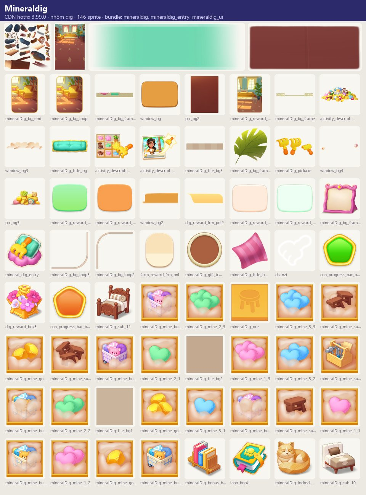
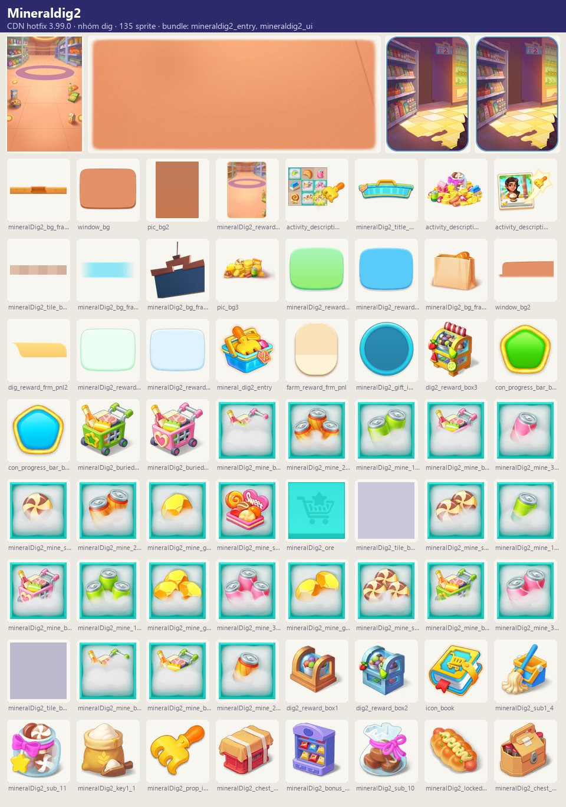
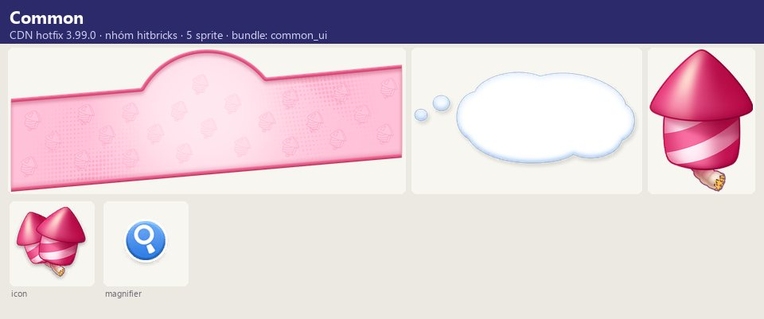
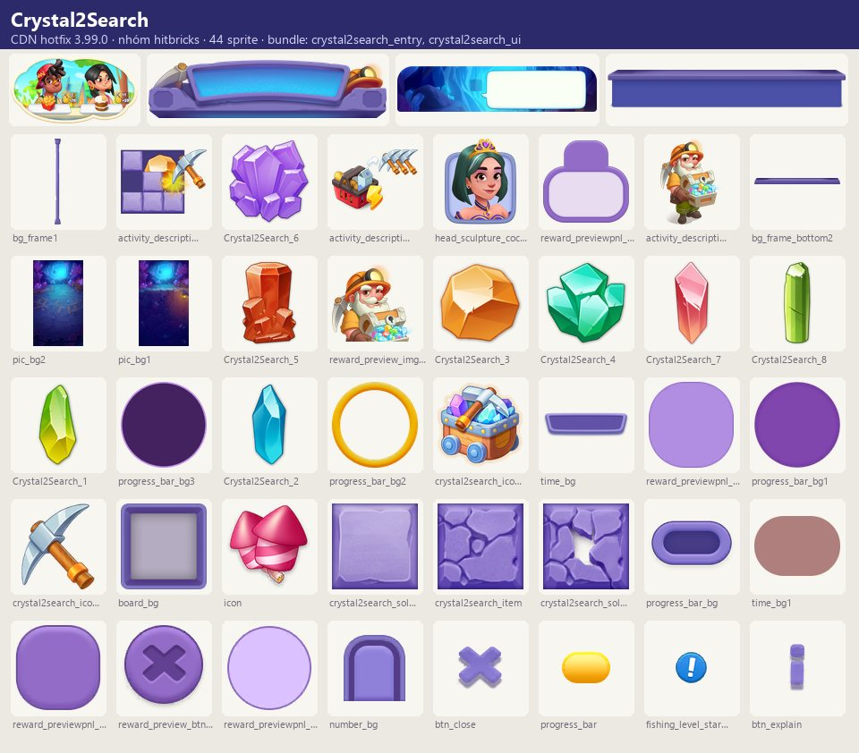
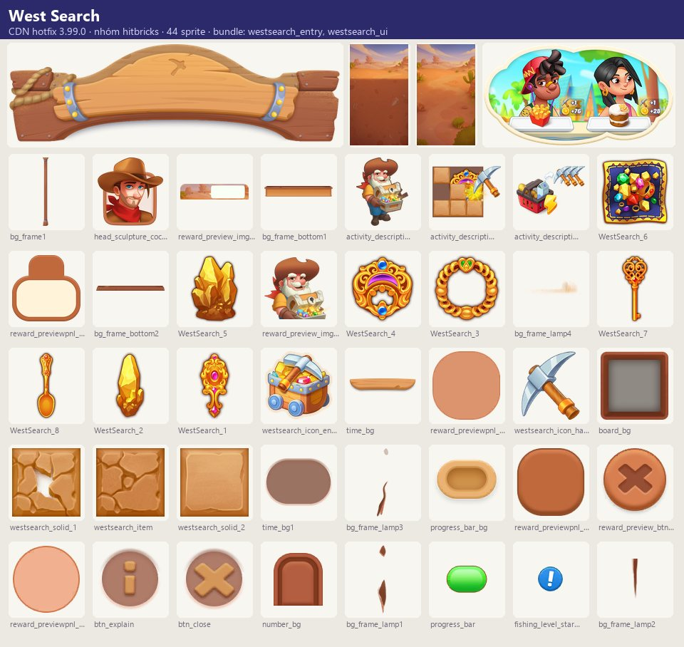
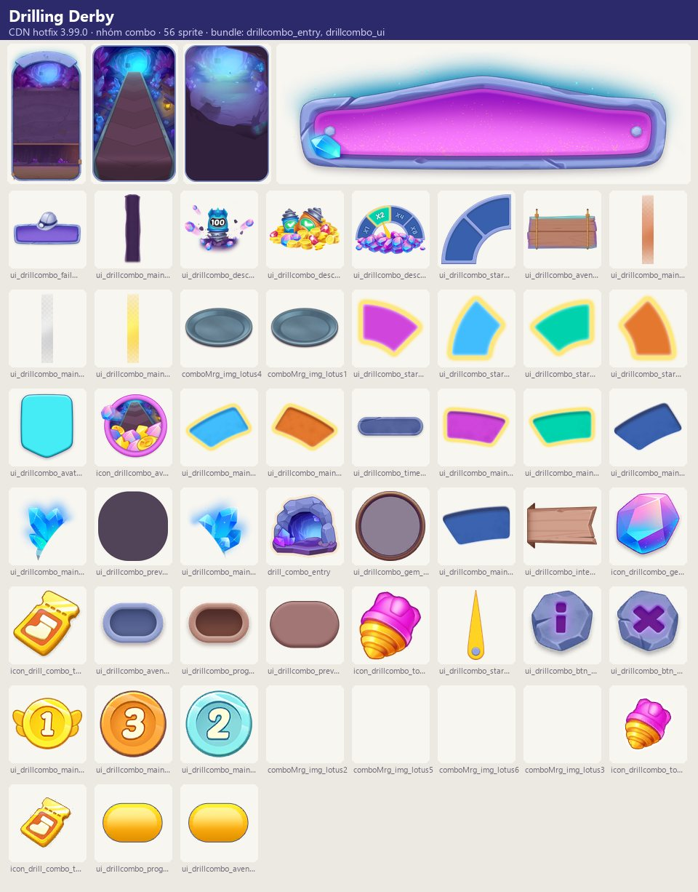

Tài nguyên hình ảnh
Họ sự kiện tiêu công cụ (kiếm từ giao đơn / chạm máy tạo năng lượng / gói) để đào, phá hoặc mở ô và thu vật phẩm sưu tập.
Mô tả
- Họ sự kiện tiêu công cụ (kiếm từ giao đơn / chạm máy tạo năng lượng / gói) để đào, phá hoặc mở ô và thu vật phẩm sưu tập.
- Gồm: Mineral Dig 'Home Decor Heroics' và 'Supermarket Escapade' (đào xuống theo mét bằng cào, thu đồ nội thất/nước ép, merge lấy điểm), Crystal Wonders (HitBricks — dùng cuốc phá gạch tìm báu vật, pháo hoa gây thêm sát thương), Drilling Derby (DrillCombo — đua thu mũi khoan, chuỗi thắng tăng hệ số thưởng, đường thưởng The Piercer's Path) và Cryptid Conundrum (BreakEgg — đập trứng tìm sinh vật bí ẩn, trúng bom mất toàn bộ thưởng).
Còn thiếu / chưa xác minh
Mở khóa & điểm vào
Theo lịch server; đếm ngược trước khi bắt đầu.
Điểm vào:
- Mục nhập sự kiện trên bảng/HUD
- Bong bóng 'How to get it' (công cụ)
Cách hoạt động
- Mineral Dig: giao đơn nhận công cụ (icon_dig_tool / icon_dig2_tool) → chạm hộp để dùng cào dọn ô → nhặt vật phẩm sưu tập (sổ 9 nhóm) → merge để lấy điểm → đạt mốc thưởng; độ sâu tính theo mét ('You reached {0}m', 'MAX DISTANCE'), mốc độ sâu có danh hiệu; hết đồ: 'You've already found all…'; hết sự kiện công cụ thừa quy đổi thành thưởng.
- Crystal Wonders: chạm máy tạo năng lượng nhận cuốc (bật booster năng lượng để nhận nhiều cuốc) → phá gạch, pháo hoa → thu đủ báu vật nhận thưởng + avatar 'Queen Quinn'; có gói 'Precious Stones Pack' chọn một.
- Drilling Derby: giao đơn nhận mũi khoan → đua về đích (first {0} players) → thắng liên tiếp tăng multiplier, thua reset/giảm; đá quý thu được đi trên The Piercer's Path.
- Cryptid Conundrum: chọn trứng; trúng đúng tăng phần thưởng lên mức jackpot, trúng bom mất hết; có thể dừng nhận thưởng hoặc trả gem để tiếp tục; lượt chơi miễn phí theo thời gian.
Luồng chi tiết theo code
Mineral Dig: giao đơn nhận công cụ (icon_dig_tool / icon_dig2_tool) → chạm hộp để dùng cào dọn ô → nhặt vật phẩm sưu tập (sổ 9 nhóm) → merge để lấy điểm → đạt mốc thưởng; độ sâu tính theo mét ('You reached {0}m', 'MAX DISTANCE'), mốc độ sâu có danh hiệu; hết đồ: 'You've already found all…'; hết sự kiện công cụ thừa quy đổi thành thưởng. Crystal Wonders: chạm máy tạo năng lượng nhận cuốc (bật booster năng lượng để nhận nhiều cuốc) → phá gạch, pháo hoa → thu đủ báu vật nhận thưởng + avatar 'Queen Quinn'; có gói 'Precious Stones Pack' chọn một. Drilling Derby: giao đơn nhận mũi khoan → đua về đích (first {0} players) → thắng liên tiếp tăng multiplier, thua reset/giảm; đá quý thu được đi trên The Piercer's Path. Cryptid Conundrum: chọn trứng; trúng đúng tăng phần thưởng lên mức jackpot, trúng bom mất hết; có thể dừng nhận thưởng hoặc trả gem để tiếp tục; lượt chơi miễn phí theo thời gian.
Tài nguyên hình ảnh (7)
7 bảng sprite trích từ bundle sự kiện trên CDN hotfix 3.99.0 (mỗi bảng là một chủ đề/biến thể; sprite rời, không phải màn hình đã dựng). Bấm ảnh để phóng to; nhãn UC dẫn tới use case tương ứng.














Số liệu chính
| Chỉ số | Giá trị | Nguồn |
|---|---|---|
| Skin/biến thể có bundle trên CDN; server chọn skin nào chạy | 1: Drill Combo | Biến thể chủ đề — nhóm combo — facts/runtime/decoded/cdn_themes.json |
| Skin/biến thể có bundle trên CDN; server chọn skin nào chạy | 2: Mineraldig, Mineraldig2 | Biến thể chủ đề — nhóm dig — facts/runtime/decoded/cdn_themes.json |
| Skin/biến thể có bundle trên CDN; server chọn skin nào chạy | 2: Crystal2Search, West Search | Biến thể chủ đề — nhóm hitbricks — facts/runtime/decoded/cdn_themes.json |
Use case (4)
Bấm vào từng use case để mở. Mở/đóng tất cả
UC-01 Mineral Dig
Các bước- Dùng cào dọn hộp
- Thu vật phẩm
- Merge lấy điểm
- Nhận mốc thưởng
| Actor | Player |
|---|---|
| Trigger | Sự kiện mở |
| Điều kiện | Có công cụ |
| Kết quả | Thưởng & danh hiệu độ sâu |
| Quy tắc / số liệu | Thiếu công cụ: 'Not enough tools!'; công cụ thừa quy đổi cuối sự kiện |
| Evidence | text mineral_dig_*, mineral2_dig_*, mineralDig_book_*, mineraldig2_book_*, dig_* |
UC-02 Crystal Wonders
Các bước- Chạm máy tạo năng lượng nhận cuốc
- Phá gạch, kích pháo hoa
- Thu đủ báu vật
| Actor | Player |
|---|---|
| Trigger | Sự kiện HitBricks |
| Điều kiện | Có cuốc |
| Kết quả | Thưởng + avatar Queen Quinn |
| Quy tắc / số liệu | Booster năng lượng → nhiều cuốc; cuốc thừa quy đổi |
| Evidence | text crystal2Search_*, Search_*, pickaxe_notice; prefab HitBricks/effect_Crystal2Search_* |
UC-03 Drilling Derby
Các bước- Thu mũi khoan từ đơn
- Về đích trong top {0}
- Thắng liên tiếp tăng multiplier
| Actor | Player |
|---|---|
| Trigger | Bắt đầu trận |
| Điều kiện | — |
| Kết quả | Thưởng × multiplier; đá quý trên The Piercer's Path |
| Quy tắc / số liệu | Thua: reset (hoặc giảm ở biến thể _return) |
| Evidence | text drill_combo_*; prefab ComboActivity/DrillCombo* |
UC-04 Cryptid Conundrum
Các bước- Chọn trứng
- Đúng: tăng thưởng; bom: mất hết
- Claim and leave hoặc Continue bằng gem
| Actor | Player |
|---|---|
| Trigger | Lượt chơi (miễn phí theo giờ) |
| Điều kiện | — |
| Kết quả | Thưởng tích lũy / jackpot |
| Quy tắc / số liệu | Bảng tỉ lệ rơi theo level; thưởng tốt hơn ở level cao |
| Evidence | text break_egg_* |
Cấu hình (5)
Gộp mọi nguồn: const trong code, JSON mặc định trong Resources, bảng static, storage key, AB test, cờ server.
| Nguồn | Key | Kiểu | Giá trị | Ý nghĩa | Nơi định nghĩa |
|---|---|---|---|---|---|
| asset | Biến thể | list | MineralDig (Home Decor Heroics), MineralDig2 (Supermarket Escapade), Crystal2Search, DrillCombo, BreakEgg | UIPrefabConfig, game_text | |
| CDN hotfix 3.99.0 (catalog Addressables + bundle) | Biến thể chủ đề — nhóm combo | list | 1: Drill Combo | Skin/biến thể có bundle trên CDN; server chọn skin nào chạy | facts/runtime/decoded/cdn_themes.json |
| CDN hotfix 3.99.0 (catalog Addressables + bundle) | Biến thể chủ đề — nhóm dig | list | 2: Mineraldig, Mineraldig2 | Skin/biến thể có bundle trên CDN; server chọn skin nào chạy | facts/runtime/decoded/cdn_themes.json |
| CDN hotfix 3.99.0 (catalog Addressables + bundle) | Biến thể chủ đề — nhóm hitbricks | list | 2: Crystal2Search, West Search | Skin/biến thể có bundle trên CDN; server chọn skin nào chạy | facts/runtime/decoded/cdn_themes.json |
| mã Lua giải mã (phân tích sâu, đã kiểm chứng) | Theo mã Lua (1) | note | Thư mục Break là Besties' Shopping Day; Cryptid Conundrum không có module Lua. Dig: bàn 40 hàng, 384 lượt đào. Công cụ thừa của Dig và HitBricks đổi năng lượng theo min(100, 10 + ⌊n/2⌋ × 5). HitBricks lấy cuốc theo search_type. | BreakDefinition.json; DigActivityModel.ExchangeReward dòng 244-255; HitBricksActivityModel dòng 153-163 |
Giao diện (UI)
| Element | Class | Mục đích |
|---|---|---|
| Đào | DigActivity/MineralDig*BaseWindow, ItemDigView_mineral(2) | |
| Phá gạch | HitBricks/* | |
| Khoan | ComboActivity/DrillCombo* |
Storage keys
activity
Chưa đọc được / ghi chú
- Bố cục ô, xác suất, thưởng mốc do server
Tính năng liên quan
Đơn hàng & khách Năng lượng DailyWeekly (nhiệm vụ mineral/search), StreakCheckIn (dig/break)
Nguồn đã đọc
- notes/packs/DigEvents.md
- facts/runtime/cdn_png/index.json + screens/cdn_shots.json (bundle sự kiện CDN)
- analysis/sale-event-deep.md
- facts/lua/src (Lua giải mã)